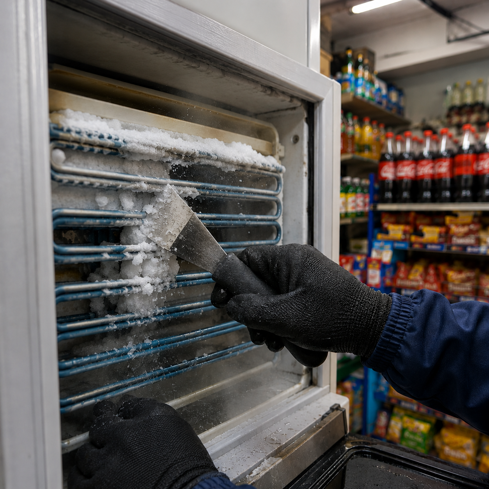
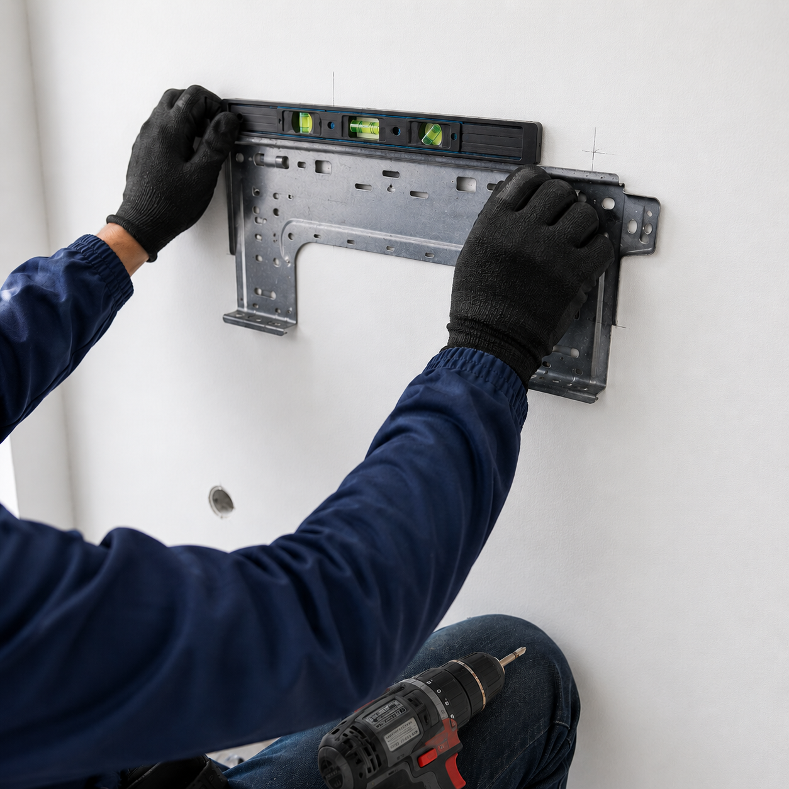
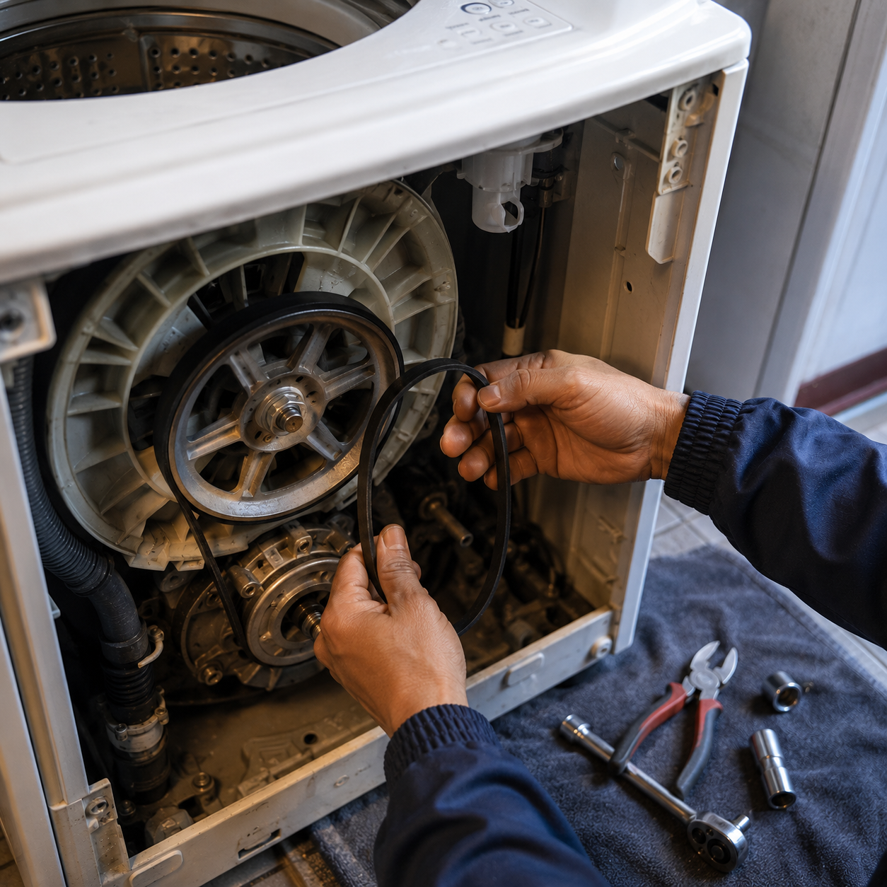
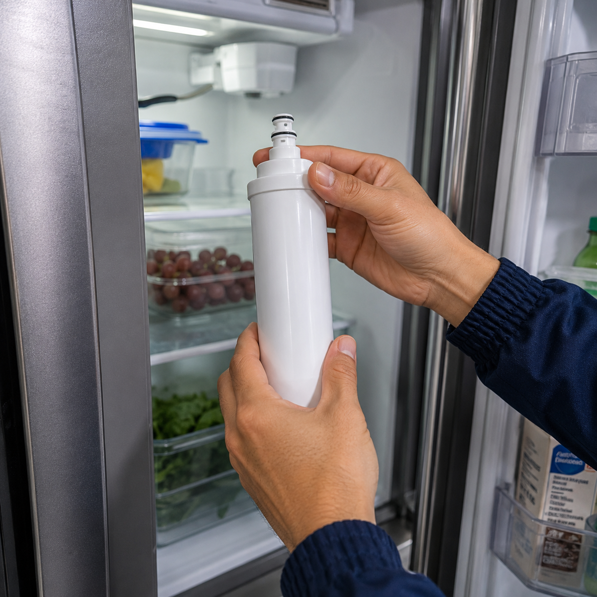

Más de 25 años cuidando los equipos de tu hogar
Somos OCACENTRO, una compañía de servicio técnico especializada en refrigeración, lavado y climatización. Reparamos con honestidad, repuestos originales y garantía en cada trabajo.

Experiencia real, resultados que duran
Nacimos con un objetivo simple: ofrecer un servicio técnico en el que la gente pueda confiar. Hoy, después de más de dos décadas, seguimos con la misma filosofía: diagnósticos honestos, trabajo bien hecho y trato cercano.
- Técnicos certificados
Personal con experiencia comprobada en electrodomésticos y climatización.
- Repuestos originales
Usamos partes de calidad para que la reparación dure, no para salir del paso.
- Garantía
Respondemos por cada trabajo. Si algo no queda bien, lo resolvemos.
Resultados en cifras
Cerca de ti en Bogotá y la sabana
Nos desplazamos a tu domicilio o negocio sin costo de visita cuando autorizas la reparación con nosotros.
- Bogotá — todas las localidades
- Soacha
- Mosquera
- Chía
- Zipaquirá
- Cota · Funza · Madrid
- Cajicá · La Calera
- Sibaté · Facatativá y más
Trabajos reales, resultados reales
Así trabajamos día a día en casas y negocios de Bogotá y la sabana.




Resolvemos tus dudas
Sí. Cubrimos todas las localidades de Bogotá y municipios como Soacha, Mosquera, Chía, Zipaquirá, Cota, Funza, Madrid, Cajicá y La Calera. El técnico se desplaza hasta tu domicilio o empresa.
Sí. Toda reparación cuenta con garantía sobre el trabajo realizado y los repuestos instalados.
La mayoría de reparaciones se resuelven el mismo día. Cuando se requiere un repuesto especial, coordinamos la entrega en el menor tiempo posible.
Refrigeración (nevecones, neveras, congeladores, refrigeradores), lavadoras, secadoras, centros de lavado y aire acondicionado, en el sector doméstico, comercial e industrial.
Pon tu equipo en manos expertas
Más de 25 años de experiencia al servicio de tu hogar o negocio. Atención el mismo día.